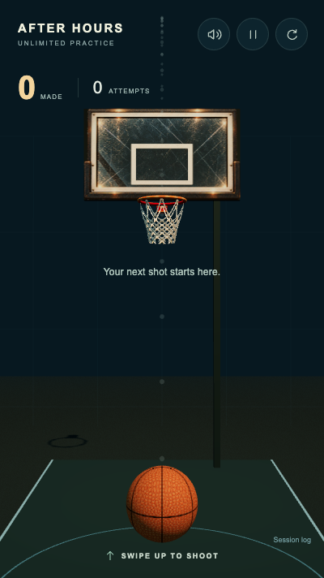
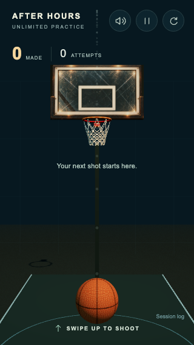
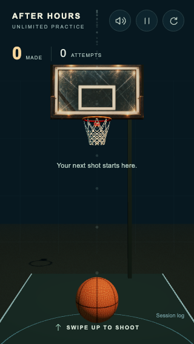
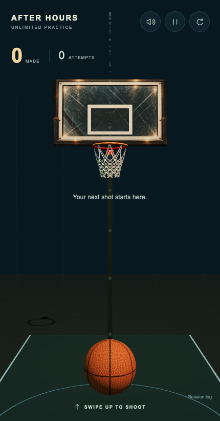
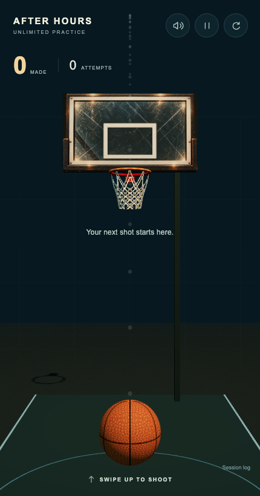
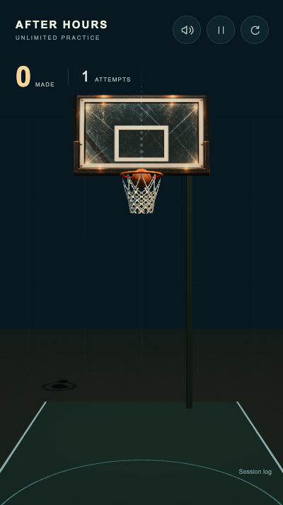
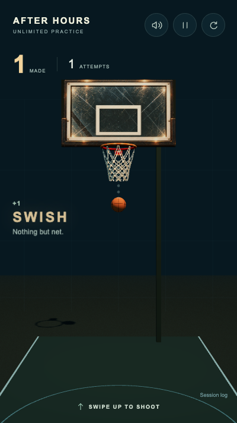
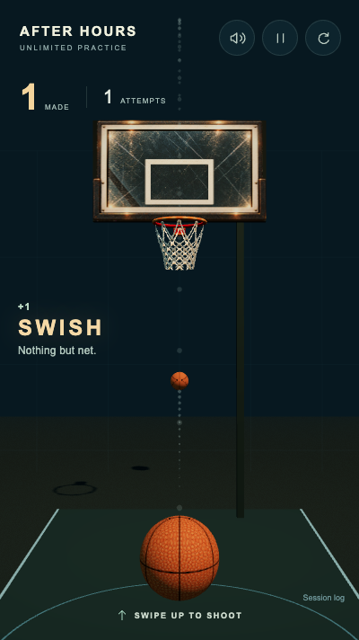

400x712


The only runtime edit moves/extends the non-colliding decorative support behind the right of the board. Ball material, supplied assets, camera and all physical settings are unchanged. Tests and recordings use desktop Chrome with touch emulation; no physical iPhone/Android testing or device FPS claim.
Report and 25–30-shot phone checklist · Unchanged flight comparison





Use the player controls to hear audio. Full portrait screenshots are paced by wall time at 25 encoded fps; duplicate frames preserve duration. This recording method is not a device performance measurement.


